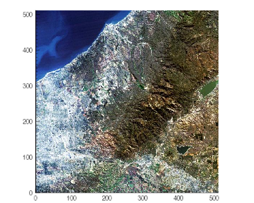
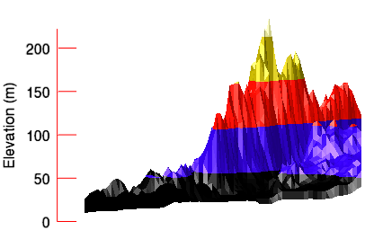

You can add or change axes in graphics. The examples on this page include adding axes to an image and adding and changing the properties of an axis on a three-dimensional contour graphic.
Axes on an image help illustrate the dimensions (number of pixels) in each direction, as shown in the following example:

; Define the data by reading the image into IDL,
; creating the aerial_view variable to hold the data.
aerial_view = FILEPATH('elev_t.jpg', $
SUBDIR=['examples','data'])
; Display the image.
im = IMAGE(aerial_view)
xax = AXIS('X', TRANSPARENCY=50, LOCATION=[0,0])
yax = AXIS('Y', TRANSPARENCY=50, LOCATION =[0,0])
| • | X, Y - the axes are defined by their numeric value or their name. For example, 0 or X for the X axis, 1 or Y for the Y axis, and 2 or Z for the Z axis (for three-dimensional graphics.) |
| • | LOCATION - defines the location of the axis. |
The example shows a digital elevation model (DEM) taken from the Santa Monica mountains in California. This three-dimensional example illustrates how to add a Z axis to the graphic after creation.

; Define the data.
file = file_which('elevbin.dat')
dem = read_binary(file, data_dims=[64,64])
; Display the data.
c = CONTOUR(dem, $
RGB_TABLE=5, $
/FILL, $
PLANAR=0, $
AXIS_STYLE=0)
; Rotate the graphic.
c.ROTATE, -30, /ZAXIS
c.ROTATE, -25, /XAXIS
; Create a Z axis using the AXIS function.
z = AXIS(2)
; Change the AXIS properties.
z.MINOR=0
z.TICKLEN=0.10
z.COLOR='red'
z.TEXT_COLOR='black'
z.TITLE='Elevation (m)'
| • | RGB_TABLE - defines the color table used to display the image. Colorbar uses the colors defined in this property. |
| • | FILL - specifies that the contour is filled. This keyword uses the colors defined in RGB_TABLE. |
| • | PLANAR - PLANAR = 0 displays the graphic in three-dimensional space rather than on a plane. The default is PLANAR=1, which displays a graphic on a plane. |
| • | AXIS_STYLE - defines the axis style. AXIS_STYLE = 0 suppresses the display of all axes. |
| • | ROTATE - the Rotate Method defines the rotation of the graphic based on each axis. |
| • | 2 - the axes are defined by their numeric value or their name. For example, 0 or X for the X axis, 1 or Y for the Y axis, and 2 or Z for the Z axis (for three-dimensional graphics.) |
| • | MINOR - defines the number of minor ticks to display on the axis. Setting this property to zero suppresses minor ticks. |
| • | TICKLEN - defines the length of the ticks. The default is 0.05. |
| • | COLOR - defines the color of the axis. If TEXT_COLOR is not set, it is the same as COLOR. |
| • | TEXT_COLOR - defines the color of the axis title. |
| • | TITLE - defines the graphic title. |
| • | Graphics Examples |
| • | Rotate Method |
| • | AXIS |
| • | Graphics annotations |
| • | IDL Graphics Functions |
| • | Change Graphics Properties |
| • | Multiple Graphics in One Window |
| • | Saving Graphics |
| • | Formatting IDL Graphics Symbols and Lines |